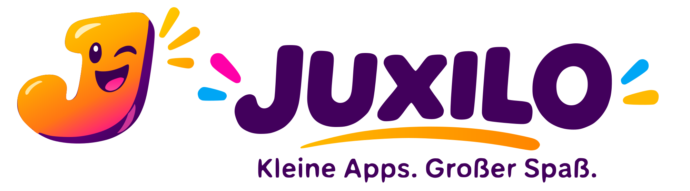
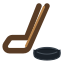
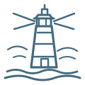
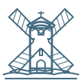
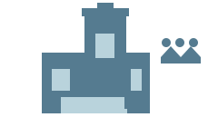
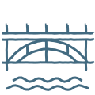

TRAVEL
Getting out there.
Discovering new places, collecting impressions and seeing things from a different angle.
EXPLORE 29 PLACES

Not a big portfolio. Just a quick guide to the things I'm working on – and the places you can find me online.
SEE WHAT’S TAKING SHAPESome projects start with a question. Others on the tennis court. Here's what I'm working on right now.
Seven projects – including TENNILO Score, Tournament, Umpire and ClubDisplay under the same brand.
 Tournaments & rules
Organising and running tennis tournaments with confidence. Tennis-Schiri brings together tournament management, referee assignments and services for tennis clubs – including rules advice, workshops and upcoming events.
02
Tournaments & rules
Organising and running tennis tournaments with confidence. Tennis-Schiri brings together tournament management, referee assignments and services for tennis clubs – including rules advice, workshops and upcoming events.
02

 wiedeck.de · Website design & development
wiedeck.de – my own website and web design project. Custom websites, development and references: explore services and examples with screenshots and feature lists on the dedicated page, without fixed prices.
03
wiedeck.de · Website design & development
wiedeck.de – my own website and web design project. Custom websites, development and references: explore services and examples with screenshots and feature lists on the dedicated page, without fixed prices.
03

 Scorekeeping app · Apple Watch · In development
TENNILO Score – keep score right from your wrist. A tennis scorekeeping app for Apple Watch, with an accompanying iPhone app. Planned beta test: 27 December 2026 at a ranking tournament in Bad Saarow; targeted launch in spring 2027.
04
Scorekeeping app · Apple Watch · In development
TENNILO Score – keep score right from your wrist. A tennis scorekeeping app for Apple Watch, with an accompanying iPhone app. Planned beta test: 27 December 2026 at a ranking tournament in Bad Saarow; targeted launch in spring 2027.
04 BASIC & PLUS · PilotYour club on one display. Fixtures, events, news, sponsors, dining and weather. Booking integration subject to approval.
05
BASIC & PLUS · PilotYour club on one display. Fixtures, events, news, sponsors, dining and weather. Booking integration subject to approval.
05
 Tournament management · In development
TENNILO Tournament – organise tournaments digitally. A web app under the TENNILO brand for club and organiser events: formats, draws, schedules, results and live score displays.
06
Umpire app · In planning
TENNILO Umpire – digital tools for tennis officials. Planned features include a modular interface for officiating matches and sending scores to external scoreboards.
07
Tournament management · In development
TENNILO Tournament – organise tournaments digitally. A web app under the TENNILO brand for club and organiser events: formats, draws, schedules, results and live score displays.
06
Umpire app · In planning
TENNILO Umpire – digital tools for tennis officials. Planned features include a modular interface for officiating matches and sending scores to external scoreboards.
07

Fun apps · In development JUXILO is the home of six playful mini-apps. Starting with Wer muss?!, the collection includes timing challenges, quick games and silly choices – with a shared design.Real screenshots from the TENNILO Score demo – from wrist to phone to the live scoreboard.


Tennis tournaments, digital tools and little everyday ideas may seem worlds apart. What connects them is the joy of finding a simpler way – and then actually building it.
And far more than tennis and technology.
Some people know me from the tennis court. Others through my apps or websites. But of course, there is more to life than that.
I enjoy travelling, listening to music and good food. Most importantly, friends and family are part of my life – and spending time with them matters more than any project.
Then there are hobbies, new experiences and the simple things that make life interesting. Not everything needs a project plan.

Six parts of my life that didn't really fit on a project-only website before.
Discovering new places, collecting impressions and seeing things from a different angle.
EXPLORE 29 PLACESMusic is part of my day – sometimes in the background, sometimes front and centre.
Restaurants, bistros and snack bars – I love trying new places. Plus my HRC collection.
MY HRC STOPSSitting together, talking, laughing and enjoying time with friends.
Making time for each other. Being personal without putting every detail online.
An Eisbären fan since 1998, and a regular at Berlin comedy clubs – especially smaller, new venues.
MORE ABOUT MY HOBBIESAway from tennis and code, things can get loud. Or just really funny.
I've been an Eisbären fan since 1998. It's a passion that's been with me for quite a while – and certainly not just in passing.
I regularly visit comedy clubs in Berlin and love smaller venues. Mostly German-language shows, but more and more English comedy too. Berlin has excellent comedians, and I enjoy discovering new places.
PLACES I'VE VISITEDSome of the clubs and venues I've discovered over time. The overview here lists names only; shows and performers are tracked in my comedy journal.
Berlin has brilliant comedians. Some venues are tiny, others a little larger. I enjoy trying something new.
MY COMEDY JOURNAL – SHOWS & PERFORMERS ↗
Some places once. Others apparently worth returning to.
 Elizabeth Tower / Big Ben
Elizabeth Tower / Big Ben
 Hamburg Coat of Arms
Hamburg Coat of Arms Prague Castle
Prague Castle Cologne Cathedral
Cologne Cathedral Beach & Black Sea
Beach & Black Sea
Baltic Sea coast
Stawa Młyny Edinburgh Castle
Edinburgh Castle
Royal Palace Riga Old Town
Riga Old Town Warsaw Mermaid
Warsaw Mermaid Wrocław Dwarf
Wrocław Dwarf Canal Houses
Canal Houses Manneken Pis
Manneken Pis Eiffel Tower
Eiffel Tower
Porto Historic Centre Belém Tower
Belém Tower Munich Monk
Munich Monk St. Stephen’s Cathedral
St. Stephen’s Cathedral Golden Roof
Golden Roof Bolzano Cathedral
Bolzano Cathedral Liberty Statue
Liberty Statue Sagrada Família
Sagrada Família Milan Cathedral
Milan Cathedral Acropolis
Acropolis Hagia Sophia
Hagia SophiaI'm always looking for new places to eat. Whether it's a restaurant, bistro or simple snack bar, they all have their charm. It's not about the size of the venue – it's about enjoying the food.
23 STOPS COLLECTED ON THE ROAD
Personal, unofficial collection, not affiliated with Hard Rock. City pins are original illustrations, not official merchandise. London Original and Piccadilly Circus are separate stops.
Not everything belongs online. Some stories are best shared with the people who were there.
Find me
elsewhere.
Quick links, not long introductions. Find my profiles and project channels here.